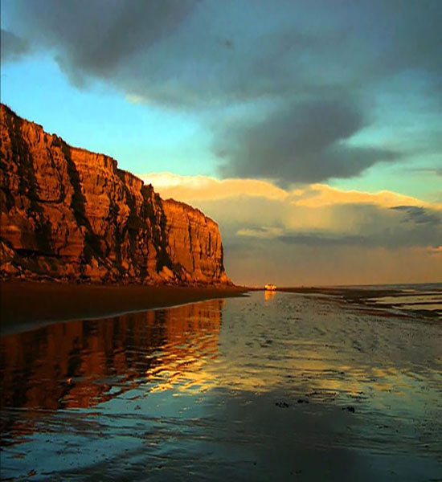

Costa
La playa y el mar son los protagonistas de los paisajes de nuestra bella costa patagónica. El epicentro
natural de esta zona es el Golfo San Matías, en torno al cual se distribuyen varias localidades costeras.
A
lo largo de esta ruta escénica de los acantilados, accedemos a diferentes balnearios y a una gran diversidad
de playas de arena o pedregosas.En Sierra Grande, se puede realizar turismo minero en las instalaciones
de la que fuera la mina de hierro más grande de Sudamérica.
